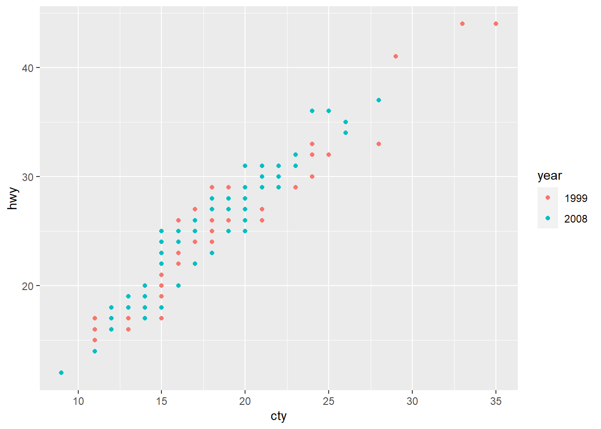
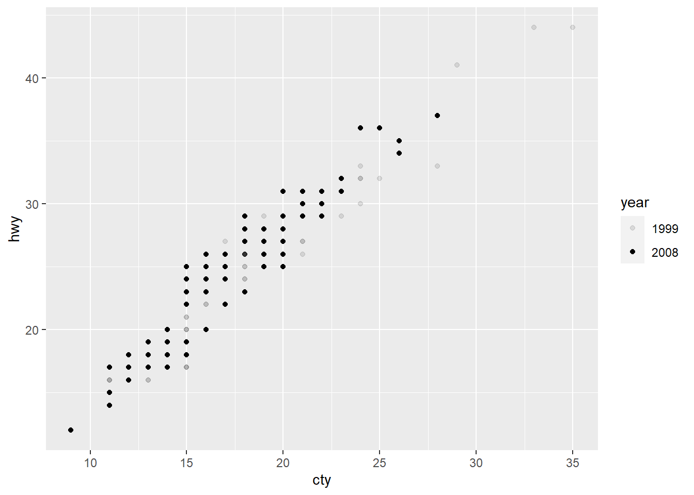
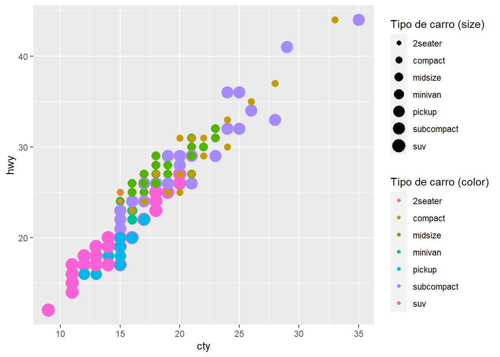

3 ggplot2 (60 minutos)
3.1 Carrega pacotes a serem usados
#install.packages("tidyverse")
#install.packages("dplyr")
#install.packages("tidyr")
#install.packages("ggplot2")
library(tidyverse)
# Manipulação de dados
#library(dplyr)
# Visualização de gráficos
library(ggplot2)
library(gridExtra)
library(patchwork)
library(plotly)
library(esquisse)
# Para dados gráfico de perfis
library(nlme)Alguns links
3.3 Primeiros passos usando geom_point
dados <- mpg
ggplot(dados)
ggplot(dados, aes(x = cty, y = hwy))
# Alternativas
ggplot(dados, aes(x = cty, y = hwy)) +
geom_point()
ggplot(dados) +
geom_point(aes(x = cty, y = hwy))
ggplot() +
geom_point(data = dados, aes(x = cty, y = hwy))
# Fim
ggplot(dados, aes(x = cty, y = hwy)) +
geom_point(colour = "red")
ggplot(dados, aes(x = cty, y = hwy)) +
geom_point(colour = "red", size = 6)ggplot(dados, aes(x = cty, y = hwy)) +
geom_point(colour = "red", size = 6, shape = 10)
# Alternativa
ggplot(dados, aes(x = cty, y = hwy)) +
geom_point(colour = "red", size = 6, shape = "circle plus")ggplot(dados, aes(x = cty, y = hwy)) +
geom_point(colour = "red", size = 6, shape = 10)+
labs(x = "cty (city miles per gallon hwy)",
y = "hwy (highway miles per gallon)",
title = "Pensar em algum título...",
subtitle = "Escrever alguma coisa")3.3.1 Mais detalhes sobre geom_point
geom_point() understands the following aesthetics (required aesthetics are in bold):
x
y
alpha
colour
fill
group
shape
size
stroke
ggplot(dados, aes(x = cty, y = hwy)) +
geom_point()
ggplot(dados, aes(x = cty, y = hwy, col = factor(year))) +
geom_point() +
labs(col = "year")
# Alternativa
ggplot(dados, aes(x = cty, y = hwy, col = factor(class))) +
geom_point() +
labs(col = "class")+
scale_color_brewer(type = "qual")ggplot(dados, aes(x = cty, y = hwy, col = factor(class))) +
geom_point() +
labs(col = "class")+
scale_color_brewer(type = "div")
ggplot(dados, aes(x = cty, y = hwy, col = factor(class))) +
geom_point() +
labs(col = "class")+
scale_color_brewer(palette = "Set1", name = "Tipo de carro")+
scale_y_continuous(breaks = seq(10,60,3))+
scale_x_continuous(breaks = seq(10,40,3))+
theme_minimal()
ggplot(dados, aes(x = cty, y = hwy, alpha = factor(year))) +
geom_point() +
labs(alpha = "year")
ggplot(dados, aes(x = cty, y = hwy, size = factor(year))) +
geom_point() +
labs(size = "year")
# Alternativa
ggplot(dados, aes(x = cty, y = hwy, col = cty <= 20)) +
geom_point() +
geom_vline(xintercept = 20)+
labs(col = "year")
# Erro comum
ggplot(dados, aes(x = cty, y = hwy, col = "red")) +
geom_point()+
labs(col = "year")
ggplot(dados, aes(x = cty, y = hwy)) +
geom_point(col = "red")+
labs(col = "year")
# Fim Erro comum
ggplot(dados, aes(x = cty, y = hwy, shape = factor(year))) +
geom_point(col = "red") +
labs(shape = "year")
ggplot(dados, aes(x = cty, y = hwy, size = class)) +
geom_point() +
labs(size = "class")
ggplot(dados, aes(x = cty, y = hwy,
size = class,
col = class)) +
geom_point() +
guides(colour = guide_legend("Tipo de carro (color)"),
size = guide_legend("Tipo de carro (size)"))
ggplot(dados, aes(x = cty, y = hwy,
size = class,
col = class)) +
geom_point() +
labs(col = "Tipo de Carro", size = "Tipo de Carro")+
guides(col = "legend")
3.4 smooth, boxplot, histogram
v1<- ggplot(dados, aes(x = cty, y = hwy)) +
geom_point(col = "blue")+
geom_smooth(method = mgcv::gam,
formula = y ~ s(x, bs = "cs") ,
col = "red",
se = FALSE)
v1
v2 <- ggplot(dados, aes(x = cty)) +
geom_boxplot(fill = "red")
v2
v3 <- ggplot(dados, aes(x = cty)) +
geom_histogram(bins = 10, fill = "red", col = "blue", lwd=2)
v3v4<- ggplot(dados, aes(x = cty)) +
geom_histogram(aes(y = after_stat(density)),
bins = 10, fill = "yellow", col = "red") +
geom_density(col = "blue", lwd =3)
v4
# Adicional (estatístic experimental)
ggplot(dados, aes(x = drv, y = cty, col = drv)) +
geom_boxplot()+
theme_bw()+
theme(legend.position = "none")
3.5 gridExtra e patchwork
Alguns links
# gridExtra
grid.arrange(v1, v2, v3, v4) 
# patchwork
v1 + v2v1 | v2
v1 / v2
v1 + v2 + v3v1 + (v2 + v3)
v1 | (v2 / v3)v1 / (v2 + v3)
v1 + v2 + v3 + v4 v1/(v2+v3+v4)v1 + (v2 + v3 + v4)
v1 + v2 + (v3 + v4)
(v1 | v2 | v3) / v43.6 bar, col, density, density2d
v5 <- ggplot(dados , aes(x = manufacturer)) +
geom_bar()+
theme(axis.text.x = element_text(angle = 45))
v5
# Dúvidas no geom_col
v6 <- ggplot(dados , aes(x = manufacturer, y = cty)) +
geom_col()+
theme(axis.text.x = element_text(angle = 45))
v6
dados %>%
select(manufacturer, cty) %>%
group_by(manufacturer) %>%
summarise(soma_total_cty = sum(cty),
n = n())## # A tibble: 15 × 3
## manufacturer soma_total_cty n
## <chr> <int> <int>
## 1 audi 317 18
## 2 chevrolet 285 19
## 3 dodge 486 37
## 4 ford 350 25
## 5 honda 220 9
## 6 hyundai 261 14
## 7 jeep 108 8
## 8 land rover 46 4
## 9 lincoln 34 3
## 10 mercury 53 4
## 11 nissan 235 13
## 12 pontiac 85 5
## 13 subaru 270 14
## 14 toyota 630 34
## 15 volkswagen 565 27# dados %>%
# filter(manufacturer == "audi") %>%
# select(cty) %>%
# sum()
v7 <- ggplot(dados , aes(x = cty)) +
geom_density()
v7v8 <- ggplot(dados, aes(x = cty, y = hwy)) +
geom_density2d()+
geom_point(colour = "red")
v8
(v5+v6)/ (v7 + v8)# Deixar pra depois...
dados %>%
select(manufacturer, hwy, year) %>%
filter(manufacturer == "audi", year == "1999") %>%
summarise(media = max(hwy))## # A tibble: 1 × 1
## media
## <int>
## 1 29# plotly
ggplotly(
ggplot(dados, aes(x = manufacturer, y = hwy, fill = factor(year))) +
geom_col(position = "dodge") +
labs(fill = "year") +
theme(axis.text.x = element_text(angle = 45)))
dados %>% select(manufacturer, hwy, year) %>%
group_by(manufacturer, year) %>%
summarise(media = mean(hwy))# Para pensar
(dados_trat <- data.frame(tratamento = LETTERS[1:3],
resposta = c(2.3, 1.9, 3.2)))## tratamento resposta
## 1 A 2.3
## 2 B 1.9
## 3 C 3.2ggplot(dados_trat, aes(tratamento, resposta)) +
geom_col(fill = "red")
# Mais detalhes...
dados %>% select(manufacturer, hwy, year) %>%
group_by(manufacturer, year) %>%
summarise(media = mean(hwy), .groups = "drop") %>%
ggplot(aes(x = manufacturer, y = media, fill = factor(year)))+
geom_col(position = "dodge")+
labs(fill = "year") +
theme(axis.text.x = element_text(angle = 45))
3.7 facet_grid, facet_wrap
p1<- ggplot(dados, aes(x = cty, y = hwy)) +
geom_point()
p1
p1 + facet_grid(rows = vars(cyl))
p1 + facet_grid(cols = vars(cyl))
p1 + facet_grid(~cyl)
p1 + facet_grid(rows = vars(year), cols =vars(cyl))
p1 + facet_grid(year~cyl)
p1 + facet_wrap(year ~ cyl)
p1 + facet_wrap(cyl ~ year)
p1 + facet_wrap(~cyl + year)
p1 + facet_wrap(~year + cyl)
p1 + facet_wrap(year ~ cyl, ncol = 4)p1 + facet_wrap(cyl ~ year, ncol = 4)3.8 stat_function
a<- -3 # média
b<- 4 # desv. padrão
ggplot(data.frame(x = c(a - 3*b, a + 3*b)), aes(x)) +
stat_function(fun = dnorm, args = list(mean = a, sd = b))+
geom_vline(xintercept = c(a - 3*b, a, a + 3*b), col = "red", lty = 2)+
theme_minimal()
3.9 stat_summary
ggplot(dados, aes(x = manufacturer, y = hwy)) +
geom_boxplot()+
geom_point(col = "red", size=0.8)+
stat_summary(fun = mean, col = "blue")+
theme_minimal()+
theme(axis.text.x = element_text(angle = 45))
3.10 theme_*()
a1<- p1 + theme_bw() + labs(title = "theme_bw()")
a2<- p1 + theme_classic() + labs(title = "theme_classic()")
a3<- p1 + theme_light() + labs(title = "theme_light()")
a4<- p1 + theme_minimal() + labs(title = "theme_minimal()")
a1 + a2 + a3 + a4
3.11 Gráfico de perfis (Spaguetti plot)
glimpse(Orange)## Rows: 35
## Columns: 3
## $ Tree <ord> 1, 1, 1, 1, 1, 1, 1, 2, 2, 2, 2, 2, 2, 2, 3, 3, 3, 3, 3,…
## $ age <dbl> 118, 484, 664, 1004, 1231, 1372, 1582, 118, 484, 664, 10…
## $ circumference <dbl> 30, 58, 87, 115, 120, 142, 145, 33, 69, 111, 156, 172, 2…ggplot(Orange, aes(x = age, y = circumference, group = Tree,
col = Tree)) +
geom_line()+
stat_summary(aes(group = 1), fun = mean, col = "red",
geom = "line", size = 1, show.legend = FALSE,
linetype = 2)+
xlim(0, 1600)+
theme_minimal()
ggplot(Orange, aes(x = age, y = circumference, group = Tree)) +
geom_line()+
xlim(0, 1600)+
facet_wrap(~Tree)+
theme_minimal()+
theme(legend.position = "none")
3.12 plotly
Interactive web-based data visualization with R, plotly, and shiny
Plotly R Open Source Graphing Library
ggplotly(v1)
ggplotly(v2)
ggplotly(v4)
ggplotly(v5)3.14 Exemplo esquisse
ggplot(dados) +
aes(x = displ, y = hwy, colour = drv) +
geom_point(shape = "circle", size = 1.85) +
scale_color_hue(direction = 1) +
theme_minimal() +
theme(legend.position = "top")ggplot(dados) +
aes(x = displ, y = cty, colour = class, size = cty) +
geom_point(shape = "circle") +
scale_color_hue(direction = 1) +
theme(legend.position = "top") +
facet_wrap(vars(drv))